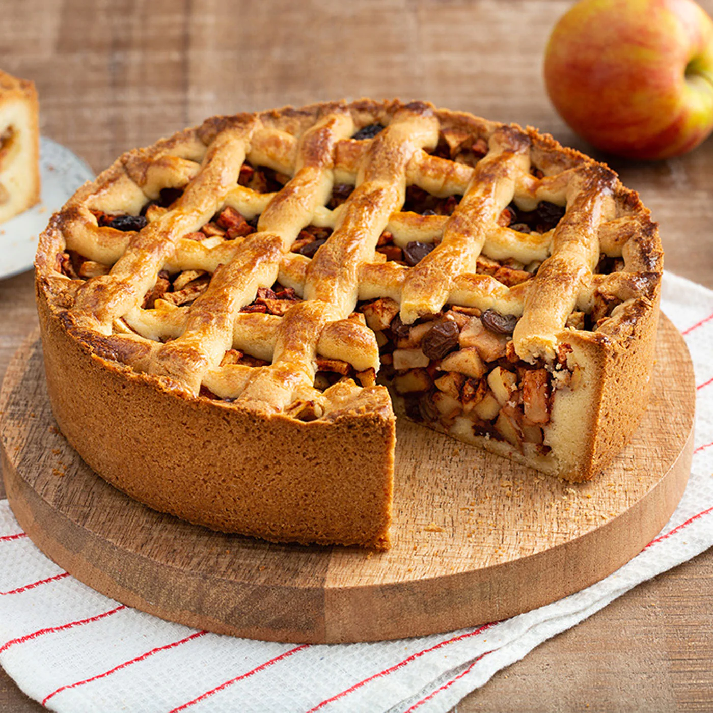

Appeltaart is a traditional Dutch apple pie that is very often accompanied by a cup of hot coffee. Although it is essentially the same as most apple pies, Dutch appeltaart differs from the classic American apple pie in many ways: it is baked in a spring-form pan, making it deeper; it is drier on the interior; it is full of big chunks of apple, currants, and raisins, and it is full of speculoos spices such as cinnamon, lemon juice, and other warm spices.
Meal prep time : 1 hour 25 minutes
Servings : 8